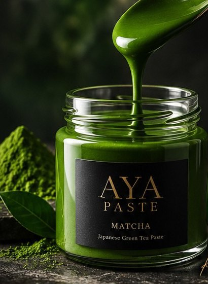
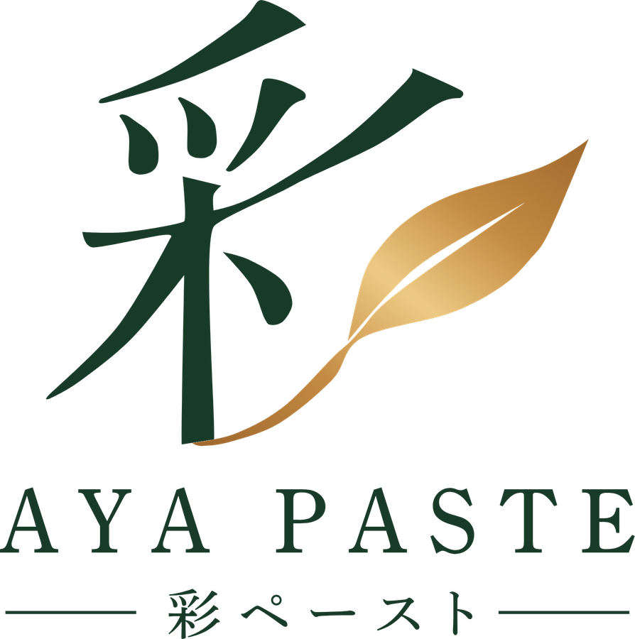

ペースト茶PHOTO ／ ペースト茶
Paste Tea
ペースト茶
お茶の色・味・香りを保ったペースト。着色料不使用で自然の色を固定し、加熱しても緑を保ちます。殺菌済みで常温流通が可能です。
緑茶／抹茶／玄米茶／ほうじ茶／紅茶

お茶の加工素材を、業務用から一般向けまで。
用途に合わせた規格・荷姿もご相談ください。


銅鍋で炊き上げ、退色を抑えて美しい発色が長く続く自社ブランド。抹茶とほうじ茶の2種類をご用意しています。
ブランドページへお茶の色・味・香りを保ったペースト。着色料不使用で自然の色を固定し、加熱しても緑を保ちます。殺菌済みで常温流通が可能です。
緑茶／抹茶／玄米茶／ほうじ茶／紅茶
日本で初めて開発したインスタント茶。緑茶・ほうじ茶などをお湯や水にさっと溶ける粉末に。1g入りスティックなど、形態のご相談も承ります。
宇治抹茶や近江緑茶などを、丁寧に挽いた微粉末茶。生地への練り込みやドリンク、料理まで幅広く使えます。
0.3mm・0.6mm・1.0mm・1.5mmの4つの粒度。茶葉らしい見た目と食感、噛んだときの香りを活かせます。
造粒時にお茶のエキスを加え、抹茶の褐変・変色を抑えた顆粒タイプの抹茶です。
お客様の原料を、ペースト・粉末・インスタントなどに加工します。国産茶のほか、ハーブ・野菜・果物にも対応します。
主な用途と、おすすめの製品の組み合わせです。配合や使い方はお気軽にご相談ください。
| 焼き菓子・ケーキ | 彩 抹茶ペースト＋粉末茶の併用で、色持ちと濃厚な風味を両立。食感を出すなら粗挽き茶も。 |
|---|---|
| パン・デニッシュ | 彩 抹茶ペースト、粉末茶。生地への練り込み、クリーム・フィリングに。 |
| 和菓子・餡 | ペースト茶。餡に練り込みやすく、加熱しても緑を保ちます。 |
| アイス・デザート | 彩ペースト、ペースト茶。ダマになりにくく、なめらかに混ざります。 |
| ドリンク | インスタントティー、彩ペースト、粉末茶。ラテ、シロップ、ボトル飲料に。 |
| 料理・惣菜 | 粗挽き茶、粉末茶。塩や衣、ドレッシングの風味づけに。 |
製菓・製パン・和菓子・飲料メーカー様、飲食店様からのご相談を承ります。用途や配合に合わせた加工もお気軽にお問い合わせください。
TEL0748-67-0215